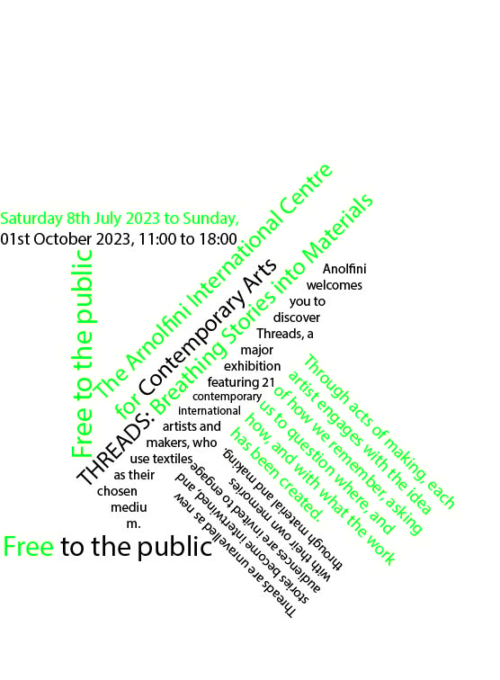

Welcome to my website which i will showcasing the work i have made for this module!
This website will include a poster design, a coded website and a textile piece
Task 1: Typography
This Task i was asked to create 8 of the different styles of typography. I was given a
breif with the words i need to use, and it was up to me how i used typography to show style, and hierarchy.

For this task I was asked to create the 8 different typographic styles for a brief. The 8 typographic
styles consist of: Bilateral, Random, Dilatational, Grid, Modular, Radial, Axial. Learning
about these different styles will help me when creating future pieces and help improve the
overall aesthetic of text. I found a few really helpful such as Axial as it uses different
directions coming from a centre point and creates a nice focus point from which text can
bloom from. I also really liked the grid style and felt I could use it very well when filling
out a page for a website without using the standard line form. Some I found I probably won't
use again is Random due to it not having much structure and could be quite hard to use in a
big body of text, however it could be good to use it in a mood board of words. Overall this
project will help when it comes to making text body’s more exciting and help having priority
over certain parts.
Task 2. Posters
This task i was asked to create a poster for client. The client was a female Skatecompany
under the name "3rdLair Skatepark & Skateshop" in whcih i was given a variety of images
and text for me to create a poster.
In the past I had some experience when it came to graphic design but not with using
Indesign. Learning this new software was very interesting and I felt it had a lot of
great features such as you being able to see the layouts and ratios very clearly.
For my posters I had created 3 different styles which I then chose to focus on the
one that fit right. The first poster I had made was all over the place and used the
text as more of the focus part which I felt wasn't the best as images are what catch
people's eye more than text. The second poster I had made used more colour such as
the yellow background with red ovals to pop out and catch the eye of the consumer.
I cut out the images of skaters and laid them out over the blank space of the poster
which I felt worked really nicely. I then placed the logo in the top centre as a
hierarchy, and placed the rest of the text below the images in a way to have the more
important information more visible. The third poster I made I felt was the best, and
this is the one I worked on further. I started by cutting the page using large triangles
and had the top half be a large picture of what I felt was the most powerful and motivating
image. The bottom half I had as blank space which I filled with a large logo and cut
outs of the other skaters, I then used elements of axial typography with some of the
text in the bottom right hand corner. I used hierarchy with the more important information
under the logo. Finally I added a black line using the pen tool to create a wave coming
off the black triangle which gives the effect of the skater’s using the line as a ramp.
Overall i really enjoyed this task as it meant i had a lot of freedom when it came down
to creating a poster using a brief, I felt i had a stong point of using images to catch
the consumers attention, but i felt like in the future i could work on using typography
further to help build character to a poster.
Task 3. WorkSheets
Throughout the semester is was given coding worksheets to help build my knowledge
on building a website. The worksheets taught me step by step new elemnts that would help
build my end website such as flex box, using web images, using buttons and the basic
understanding of website building.
https://finnegan12.github.io/worksheet4/
https://finnegan12.github.io/HTML-CSS/
Evaluation
Throughout this project i have learnt a lot when it came to coding a website. Before
starting this course i had no previous knwledge on coding and website building which
meant there was an endless amount of room for learning. I felt during the end of the
project i have started to build a very basic understanding of the fundamentals of
building a basic website. I have learnt how to use flex box to aid for different devices
using the website, i learnt the basics of styling using CSS when it comes to text aligning,
colour grading, and hierachy over titles. I felt my strong points when it came to building
the website was the hiearchy over paragraphs and headings. I feel for future projects i could build on
more naviagtion and interaction for the consumers such as anchor points, hover images, and more
interesting CSS styles. This will be something i can really focus on and improve on in later projects.
I feel like me now knowing the basic understanding of the fundamentals of website is a good start
but also now motivates me to progress more in later projects. I look forward to carry on learning
and challenging myself in this area of digital media, and i hope i can progress enough to create
a website that looks professional and has more exciting naviagtion and functions.
References
OpenAI (2023) ChatGBT. Available from https://chat.openai.com/ (11/12/23)